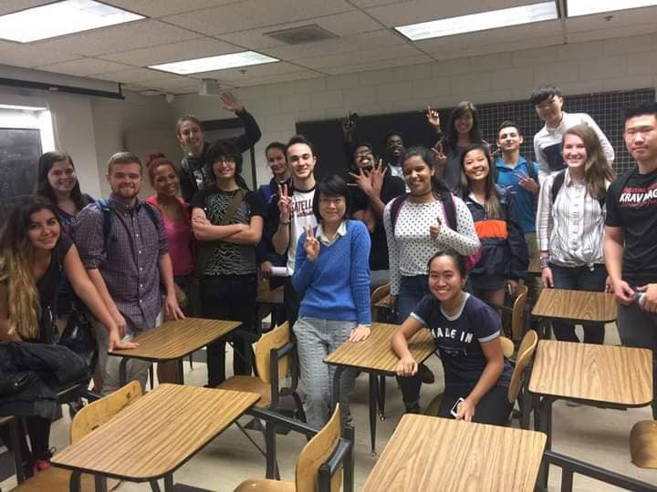

授業
教室にて In the classroom
教育は二つの言語、二つの高等教育制度にまたがる。フロリダ大学の社会学原論から東呉大学の医療社会学・AI 応用科目まで、一貫して問うのは同じこと——構造がいかに作動するかを学生に見せ、それをデータで検証する力を育てること。
東呉大学では、留学生・交換留学生を対象とした全英語授業を 2 科目開講している。
授業のインタラクティブ教材Course Companions
-
新設
AI と社会福祉の高度化
AI × 人文共融探索島：10の島でAI時代の就業力と社会的不平等を問う 授業用インタラクティブサイト。OriとAyaと一緒に橋を渡り、4つのテーマと10の問いを探索。AIホスト対話パネルと3D群島モード付き（中国語・英語）。
-
新設
犯罪学における AI 応用
犯罪学探索島：10の島で『犯罪学』4編17章を読み解く 授業用インタラクティブサイト。各島で約2章を扱い、「問い＋解説」で読解をナビゲート。キーワードには関連リンク付き（多言語）。
-
英語開講
East Asian Family and Society
東亜の家族と社会 探索島：10の島で Cohen『The Family』から東アジアの家族を読む 授業用インタラクティブサイト。10の島で13章を扱い、「問い＋解説」で読解をナビゲート。用語解説ポップアップと授業アンケート付き（多言語）。
東呉大学
2023 — 現在社会学科
全英語授業
元智大学
2021 — 2023社会政策科学科
米国
2013 — 2020University of Florida
College of Central Florida・Trinity Washington University・Santa Fe College
Santa Fe College
Trinity Washington University
学生指導Student Supervision
-
2026
顔珮安「AI がジェンダー課題と出会うとき：台湾・韓国の SNS プラットフォームのアルゴリズムは月経のスティグマをいかに再生産または解消するか」。115 学年度 国科会 学部生研究プロジェクト、採択。
-
2025
林姿妤「月経、規律訓練、女性受刑者の身体の政治：予備的考察」。114 年度 国科会 学部生研究創作賞。 受賞
-
2025
楊美潁「新移民二世の児童・若年ケアラーのケア困難と社会的構築の探究」。114 年度 国科会 学部生研究プロジェクト。